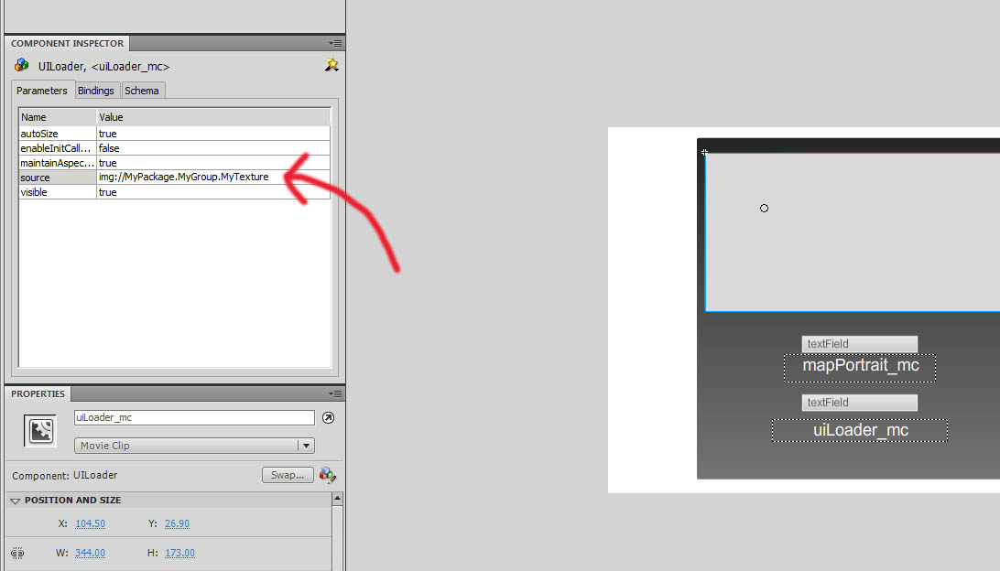

「Scaleform」の技術ガイド
概要
「Unreal Engine 3」におけ「Scaleform GFx」インテグレーション (統合) によって、Adobe Flash Professional で作成されたインターフェイスとメニューを HUD (ヘッドアップ ディスプレイ) として使用できるようになります。このドキュメントは、「Scaleform GFx」システムを使用するプログラマーのための技術ガイドです。ここでは、HUD およびメニューを実装する際に関わってくる主要なクラスを扱い、プロセス内における位置および使用方法について解説します。
*注意: *
「Scaleform」および「GFx」は Scaleform Corporation の登録商標です。Scaleform GFx c 2010 Scaleform Corporation. 無断複写・転載を禁じます。
Adobe および Flash は、米国ならびに他国における、Adobe Systems Incorporated の登録商標あるいは商標です。
GFxUI コンポーネントのリファレンス
GFxUI コンポーネントは、「Scaleform GFx」のインターフェースを表示するための基本的なシステムを構成します。プロセス全体は、新たな HUD のサブクラスから開始します。この HUD クラスは GFxMoviePlayer をセットアップします。そして、GFxMoviePlayer は GFxMovie を再生します。GFxMovie は任意の数の GFxObject を含みます。GFxObject は、プレイヤーに情報を表示すると共に、プレイヤーによるインタラクティブな操作を処理します。
GFxMovie
「Scaleform GFx」システムの中心となっているのは、GFxMovie の使用です。この GFxMovie は、Flash からエクスポートされて、タイムラインや ActionScript コード、画像リソース、CLIK オブジェクトなどを含むエンジンにインポートされる実際の Swf ムービーオブジェクトです。プレイヤーがインタラクトするインターフェイスは、このムービーを再生および操作することによって作成されます。そのためこのドキュメントの大部分では、「Unreal Engine 3」の内部で、これらの操作を実行する方法について解説しています。
GFxMoviePlayer クラス
GFxMoviePlayer クラスは、「Scaleform GFx」ムービーを初期化および再生するすべてのクラスの基本クラスです。このクラスはサブクラス化されることによって、プレイヤーに起因する個々のムービーに固有な特化した機能を実装します。この HUD クラスでは、ゲームのためのインターフェースの各種要素を再生するために、任意の時に任意の数の参照が可能です。
+
GFxMoviePlayer のプロパティ
(クリックすると表示されます。)
データの格納
- DataStoreBindings -
- DataStoreSubscriber - 当該ムービープレイヤーのための
GFxDataStoreSubscriber への参照です。
ディスプレイ
- RenderTexture - ムービーがレンダリングされるべき
TextureRenderTarget2D です。 None (なし) の場合、ムービーはフレームバッファにレンダリングされます。これを使用して、「Scaleform」 のインターフェースをワールドのサーファスに適用することができます。
- bDisplayWithHudOff - TRUE の場合は、
bShowHud が FALSE であっても、当該ムービープレイヤーがレンダリングされます。 通常、メニューには TRUE が設定され、HUD には FALSE が設定されます。
- ExternalTextures - ムービープレイヤーが新たなムービーをロードするときに自動的に置き換えられる ExternalTexture のバインディングの配列です。
- RenderTextureMode - プレイヤーのためのレンダリング モードです。
- RTM_Opaque - ブレンドなし。不透明なオーバーレイ。
- RTM_Alpha - BLEND_Translucent とともに使用。add (加算) のサポートはなし。
- RTM_AlphaComposite - BLEND_AlphaComposite とともに使用。
- bEnableGammaCorrection - TRUE の場合は、目標のサーファスに書き出す前にこのムービーがガンマ補正されます。
全般
- MovieInfo - 現在再生されている
SwfMovie を参照します。
- bMovieIsOpen - 現在のムービーが開いているか否かを示します。
Start() が呼び出されると TRUE に設定され、=Close()= が呼び出されると FALSE に設定されます。
- LocalPlayerOwnerIndex - このムービーを所有している
LocalPlayer のための Engine クラス内にある GamePlayers 配列に入れる添字です。
- ExternalInterface - ActionScript から
ExternalInterface のコールを受け取るオブジェクトへの参照です。 None (なし) の場合は、すべての ExternalInterface コールがムービープレイヤー自身を通して行われます。
- WidgetBindings -ウィジェットのバインディングの配列です。バインディングは、関連するウィジェットの
GFxObject サブクラスとウィジェット名をつなぐものです。
入力
- Capturekeys - 当該ムービープレイヤーが待ち受けていてキャプチャすることになるキーの Names の配列です。(すなわち、ゲームに送られないキーのことです)。
- FocusIgnoreKeys - 当該ムービーがフォーカスムービーの場合にゲームに送られるキーの Names の配列です。(すなわち、すべての入力はこれらのキーを除いてムービーに送られることになります)。
- bAllowInput - TRUE の場合は、当該ムービープレイヤーが入力イベントを受け入れることが許されます。デフォルトでは、TRUE になっています。
- bAllowFocus - TRUE の場合は、当該ムービープレイヤーがフォーカスイベントを受け入れることが許されます。デフォルトでは、TRUE になっています。
- bOnlyOwnerFocusable - TRUE の場合は、
LocalPlayerOwner からの入力だけがここに送られます。
- bDiscardNonOwnerInput - TRUE の場合は、当該ムービー プレイヤー所持していない
LocalPlayer からもたらされたあらゆる入力が破棄され、処理されません。1 つのプレイヤーだけに反応しながらも、他のプレイヤーからのすべての入力を消費するムービープレイヤーを作成するために、 bOnlyOwnerFocusable と共に使用されます。
- Priority - 当該ムービープレイヤーの優先順位です。複数のムービープレイヤーが同時に開いている場合に、レンダラとフォーカスの順番を決定するために使用されます。
- bCaptureInput - TRUE の場合は、当該ムービープレイヤーが入力をキャプチャします。
- bIgnoreMouseInput - TRUE の場合は、当該ムービープレイヤーがマウス入力を無視します。
再生
- bWidgetsInitializedThisFrame - TRUE の場合は、当該ムービープレイヤー内部のウィジェットはこのフレームで初期化されました。その結果、ムービーの
Advance() が完了した後で、 PostWidgetInit() イベントが発せられることになります。
- bLogUnhandledWidgetInitializations - TRUE の場合は、
WidgetInitialized() によって処理され「ない」初期化のコールバックを持つウィジェットが、デバッグのための通知をログアウトします。
- TimingMode - ムービー再生のためのタイミングに関するモードです。
- TM_Game - ゲームのデルタタイムが使われてムービーが進みます。(すなわち、ゲームを休止させるとムービーも休止します)。
- TM_Real - スローモーションおよび休止に関わらず、通常の再生速度でムービーが進みます。
- bAutoPlay - TRUE の場合は、ムービープレイヤーが (
Init() によって) 初期化されると、現在のムービーが始まって先に進みます。
- bPauseGameWhileActive - TRUE の場合は、当該ムービープレイヤーが開いている間はゲームが休止します。
- bCloseOnLevelChange - TRUE の場合は、レベルの変更時にムービーが閉じます。注意: TM_REAL タイミングモードを使用しているムービーだけがレベル変更時に開いたままでいられます。
サウンド
- SoundThemes - サウンドテーマのバインディングの配列です。このバインディングは、サウンドテーマ名と実際の UISoundTheme の間を結びつけるものです。
+
GFxMoviePlayer の関数
(クリックすると表示されます。)
TODO
外部のテクスチャ (External Texture)
ExternalTexture 構造体は、ムービーの画像リソース (ムービー内の画像リソース上の「リンケージ」識別子) と、Unreal テクスチャリソースとの間のマッピングを保存します。これによって、ムービーに使用される画像の実行時再マッピングが可能になります。リンケージ識別子をもつテクスチャであれば何であっても SetExternalTexture() を使用して実行時に置き換えることが可能です。
詳細については、 実行時に画像を交換する を参照してください。
メンバー
- Resource - テクスチャのリンケージ識別子です。
- Texture - リンケージ識別子にマップされたテクスチャです。
サウンドテーマのバインディング (Sound Theme Binding)
SoundThemeBinding 構造体は、サウンドテーマ名を実際の UISoundTheme にバインドします。これによって、当該ムービーに含まれているオブジェクトからのサウンドイベントを処理することができるようになります。サウンドイベントは CLIK ウィジェットによって発せられるか、アーティストによって手動で発せられます。イベントにはそれぞれ、テーマ名と再生されるイベントが含まれています。このマッピングによって、アーティストによって指定されたテーマ名が UISoundTheme アセットにバインドされます。それによってさらに、イベント名は、さまざまなサウンドキューないしはアクションにバインドされることになります。
詳細については、 UI サウンドテーマ を参照してください。
メンバー
- ThemeName - サウンドテーマの名前です。ムービー内でアーティストによって指定されます。
- Theme -
ThemeName に対応するサウンド イベントを処理するサウンドテーマです。
ウィジェットのバインディング
GFxWidgetBinding 構造体は、ムービー内にある CLIK ウィジェットのインスタンスを、GFxObject から派生した特定の UnrealScript サブクラスと関連づけるとともに、ウィジェットの Flash 名をここに追加し、さらにクラスを指定します。その結果、WidgetInitialized() の GFxObject パラメータが適切なサブクラスとして作成されることになります。
詳細については、 ウィジェットの初期化とバインディング を参照してください。
メンバー
- WidgetName - ムービー内にあるウィジェットの名前です。
- WidgetClass -
WidgetName にリンクさせる GFxObject のサブクラスです。
GFxObject クラス
GFxObject クラスは、GFxMovie に含まれる要素を表します。技術的に見ると、変数オブジェクトや関数オブジェクト、再生不可能なオブジェクトまで (その例としては、グラッフィクや CLIK コンポーネントがあげられます) あらゆるものが該当します。
+
GFxObject のプロパティ
(クリックすると表示されます。)
- Value - 当該
GFxObject が参照する、GFx 側にある GFxValue の参照情報を保存する配列です。
- SubWidgetBindings -
WidgetInitialized() コールバックのために当該ウィジェットに送られるウィジェットに関する GFxWidgetBinding の配列です。詳細は、GFxMoviePlayer の WidgetBindings を参照してください。
+
GFxObject の関数
(クリックすると表示されます。)
アクセサ
- Get [Member] - 変数の
ASValue 値を返します。汎用のアクセサは、型に特化したバージョンよりもかなり低速です。アクセスしようとしている変数の型が分かっている場合は、汎用アクセサの代わりに特化したものを使用すべきです。
- GetBool [Member] - 変数の
bool 値を返します。
- GetFloat [Member] - 変数の
float 値を返します。
- GetString [Member] - 変数の
string 値を返します。
- GetObject [Member] [type] - 指定された
GFxObject を返します。
- Member - アクセスする
GFxObject の名前です。
- type - オプション引数です。指定された場合は、この型の GFxObject だけを返します。ただし、戻される値はこの型に限定されません。結果をこの型で得たい場合は、キャストする必要があります。
- Set [Member] [Arg] - 変数の値をセットします。汎用のセッターは型に特化したバージョンよりもかなり低速です。セットしようとしている変数の型が分かっている場合は、汎用セッターの代わりに特化したものを使用すべきです。
- Member - 値をセットする変数の名前です。
- Arg - 変数にセットする
ASValue 値です。
- SetBool [Member] [b] -
bool 型変数の値をセットします。
- Member - 値をセットする変数の名前です。
- b - 変数にセットする
bool 値です。
- SetFloat [Member] f] -
float 型変数の値をセットします。
- Member - 値をセットする変数の名前です。
- f - 変数にセットする
float 値です。
- SetString [Member] [s] [InContext] -
string 型変数の値をセットします。
- Member - 値をセットする変数の名前です。
- s - 変数にセットする
string 値です。
- InContext - テキストの中に現れるタグを解決するときに使用する TranslationContext です。
- SetObject [Member] [val] -
GFxObject 変数の値をセットします。
- Member - 値をセットする変数の名前です。
- val - 変数にセットする
GFxObject 値です。
- SetFunction [Member] [context] [fname] -
- TranslateString [StringToTranslate] [InContext] - マークアップを処理するために文字列を変換します。
- StringToTranslate - 変換するテキストです。
- TranslateContext - テキストの中に現れるタグを解決するときに使用する TranslationContext です。
オブジェクト インターフェース
- GetDisplayInfo -
GFxObject の ASDisplayInfo 表示情報プロパティを返します。
- GetPosition [x] [y] -
GFxObject の位置を出力します。
- x - 出力パラメータです。水平位置を出力します。
- y - 出力パラメータです。垂直位置を出力します。
- GetColorTransform -
GFxObject の ASColorTransform カラー変換を返します。
- GetDisplayMatrix -
GFxObject の変換表示行列を返します。
- SetDisplayInfo [d] -
GFxObject の表示情報プロパティをセットします。
- d - 新たな表示情報プロパティを含む
ASDisplayInfo です。
- SetPosition [x] [y] -
GFxObject の位置をセットします。
- x - 新たな水平位置です。
- y - 新たな垂直位置です。
- SetColorTransform [cxform] -
GFxObject のカラー変換をセットします。
- cxform - 新たなカラー変換を含む
ASColorTransform です。
- SetDisplayMatrix [m] -
GFxObject の表示変換行列をセットします。
- SetDisplayMatrix3D [m] -
- SetVisible [visible] -
GFxObject のビジビリティ (可視性) をセットします。
- visible - TRUE の場合は、
GFxObject が表示されます。それ以外の場合は非表示です。
- GetText - 当該
GFxObject のテキストフィールドにあるテキストを返します。
- SetText [text] [InContext] - 当該
GFxObject のテキストフィールドをセットします。
- text - セットする新たなテキストです。
- InContext - テキストの中に現れるタグを解決するときに使用する TranslationContext です。
配列へのアクセサ
- GetElement [index] -
- GetElementObject [index] [type] -
- GetElementBool [index] -
- GetElementFloat [index] -
- GetElementString [index] -
- SetElement [index] [Arg] -
- SetElementObject [index] [val] -
- SetElementBool [index] [b] -
- SetElementFloat [index] [f] -
- SetElementString [index] [s] -
配列オブジェクト インターフェース
- GetElementDisplayInfo [index] -
- GetElementDisplayMatrix [index] -
- SetElementDisplayInfo [index] [d] -
- SetElementDisplayMatrix [index] [m] -
- SetElementVisible [index] [visible] -
- SetElementPosition [index] [x] [y] -
- SetElementColorTransform [index] [cxform] -
配列メンバー アクセサ
- GetElementMember [index] [Member] -
- GetElementMemberObject [index] [Member] [type] -
- GetElementMemberBool [index] [Member] -
- GetElementMemberFloat [index] [Member] -
- GetElementMemberString [index] [Member] -
- SetElementMember [index] [Member] [arg] -
- SetElementMemberObject [index] [Member] [val] -
- SetElementMemberBool [index] [Member] [b] -
- SetElementMemberFloat [index] [Member] [f] -
- SetElementMemberString [index] [Member] [s] -
関数プロパティ
- ActionScriptSetFunction [Member] - ActionScript における当該
GFxObject のための関数プロパティに、UnrealScript のデリゲートをセットします。この関数を呼び出す UnrealScript 関数からのデリゲートを利用します。ActionScript から UnrealScript へのコールバックを得るには便利な方法です。
- ActionScriptSetFunctionOn [target] [Member] - ActionScript における指定された
GFxObject のための関数プロパティに、UnrealScript のデリゲートをセットします。この関数を呼び出す UnrealScript 関数からのデリゲートを利用します。ActionScript から UnrealScript へのコールバックを得るには便利な方法です。
- target - 関数をセットする
GFxObject です。
- Member - セットする関数の名前です。
ActionScript のインターフェース
- Invoke [Member] [args] - ムービー上に ActionScript 関数を呼び出します。引数配列からの値をパラメータとします。 ActionScript*() メソッドの 1 つを使用して ActionScript メソッドを呼び出すラッパー関数を作成する場合よりも速度は劣りますが、サブクラスを実装する必要がありません。1 回限りの関数のために使用するか、可変長の引数をもつ関数のために使用します。
- Member - 呼び出す関数の名前を指定する文字列です。
- args - 呼び出される関数に渡す
ASValue パラメータの配列です。
- ActionScriptVoid [method] - UnrealScript 関数内部から呼び出された場合に、ラップしている UnrealScript 関数のパラメータを使用して、戻り値を返さない指定された ActionScript 関数を呼び出します。UnrealScript から ActionScript 関数を呼び出すには好ましい方法です。起動が速くオーバーヘッドが少ないためです。
- ActionScriptInt [method] - UnrealScript 関数内部から呼び出された場合に、ラップしている UnrealScript 関数のパラメータを使用して、
int 値を返す指定された ActionScript 関数を呼び出します。UnrealScript から ActionScript 関数を呼び出すには好ましい方法です。起動が速くオーバーヘッドが少ないためです。
- ActionScriptFloat [method] - UnrealScript 関数内部から呼び出された場合に、ラップしている UnrealScript 関数のパラメータを使用して、
float 値を返す指定された ActionScript 関数を呼び出します。UnrealScript から ActionScript 関数を呼び出すには好ましい方法です。起動が速くオーバーヘッドが少ないためです。
- ActionScriptString [method] - UnrealScript 関数内部から呼び出された場合に、ラップしている UnrealScript 関数のパラメータを使用して、
string 値を返す指定された ActionScript 関数を呼び出します。UnrealScript から ActionScript 関数を呼び出すには好ましい方法です。起動が速くオーバーヘッドが少ないためです。
- ActionScriptObject [path] - UnrealScript 関数内部から呼び出された場合に、ラップしている UnrealScript 関数のパラメータを使用して、
GFxObject 値を返す指定された ActionScript 関数を呼び出します。UnrealScript から ActionScript 関数を呼び出すには好ましい方法です。起動が速くオーバーヘッドが少ないためです。
- path - ムービー内で呼び出す関数へのパスです。
- ActionScriptArray [path] - UnrealScript 関数内部から呼び出された場合に、ラップしている UnrealScript 関数のパラメータを使用して、
GFxObject 値の配列を返す指定された ActionScript 関数を呼び出します。UnrealScript から ActionScript 関数を呼び出すには好ましい方法です。起動が速くオーバーヘッドが少ないためです。
- path - ムービー内で呼び出す関数へのパスです。
ムービー コントローラ
- GotoAndPlay [frame] - 指定されたフレームまでスキップして、そこから再生を開始します。
- frame - スキップ先のフレームについているフレーム ラベル (大文字小文字の区別あり) です。
- GotoAndPlayI [frame] - 指定されたフレームまでスキップして、そこから再生を開始します。
- GotoAndStop [frame] - 指定されたフレームまでスキップして、そこで停止します。
- frame - スキップ先のフレームについているフレームラベル (大文字小文字の区別あり) です。
- GotoAndStopI [frame] - 指定されたフレームまでスキップして、そこで停止します。
- CreateEmptyMovieClip [instancename] [depth] [type] - ムービー内に空の MovieClip を作成します。この MovieClip は他の MovieClip と同様に、上記の関数を使用して扱うことができます。
- instancename -
- depth -
- type -
- AttachMovie [symbolname] [instancename] [depth] [type] - 指定されたムービー インスタンスにシンボルを付けます。 InstanceName に関して、当該オブジェクトのスコープ内でインスタンスが見つからない場合は、新たなインスタンスを作成して返します。
- symbolname -
- instancename -
- depth -
- type -
ウィジェット 初期化 -
- WidgetInitialized [WidgetName] [WidgetPath] [Widget] -
enableInitCallback が TRUE にセットされている子ウィジェットが、 GFxMoviePlayer::SetWidgetPathBinding() を介してこのウィジェットにバインドされているパス内で初期化される場合、エンジンによって呼び出されるイベント スタブです。GFxMoviePlayer に代わって、子ウィジェットのために自身の初期化を処理する機能をカプセル化する GFxObject サブクラスが可能になります。ウィジェットが処理されていた場合は TRUE を返し、そうでない場合は FALSE を返します。サブクラスによってオーバーライドされる必要があります。
- WidgetName - 初期化されたウィジェットの名前です。
- WidgetPath - 初期化されたウィジェットへのパスです。
- Widget -初期化された
GFxObject ウィジェットへの参照です。
- WidgetUnloaded [WidgetName] [WidgetPath] [Widget] -
enableInitCallback が TRUE にセットされている子ウィジェットが、 GFxMoviePlayer::SetWidgetPathBinding() を介してこのウィジェットにバインドされているパス内でアンロードされる場合、エンジンによって呼び出されるイベント スタブです。ウィジェットが処理されていた場合は TRUE を返し、そうでない場合は FALSE を返します。サブクラスによってオーバーライドされる必要があります。
- WidgetName - アンロードされたウィジェットの名前です。
- WidgetPath - アンロードされたウィジェットへのパスです。
- Widget - アンロードされた
GFxObject ウィジェットへの参照です。
表示情報
ASDIsplayInfo 構造体は、実行時に簡単で素早い処理を行えるようにするために、表示オブジェクトのプロパティを格納します。 GFxObject のための表示情報は、上記 Object Interface 関数を使用することによって、入手および編集、オブジェクトへの再適用が可能です。
表示情報の使用に関する詳細は、 ウィジェット表示情報を使用する のセクションを参照してください。
メンバー
- [X/Y/Z] -
GFxObject の位置です。
- Rotation - Z 軸を中心とした
GFxObject の回転です。
- [X/Y]Rotation - 水平軸および垂直軸 (X 軸および Y 軸) を中心とした
GFxObject の回転です。
- [X/Y/Z]Scale -
GFxObject のスケールです。
- Alpha -
GFxObject の [0, 1] 範囲におけるオパシティです。
- Visible - TRUE の場合は、
GFxObject が表示されます。 それ以外の場合は、非表示にします。
- has[X/Y/Z] - TRUE の場合は、
GFxObject が X、Y、Z の位置情報をもちます。
- hasRotation - TRUE の場合は、
GFxObject が回転情報をもちます。
- has[X/Y]Rotation - TRUE の場合は、
GFxObject が X、Y (の両方またはいずれか) の回転情報をもちます。
- has[X/Y/Z]Scale - TRUE の場合は、
GFxObject が X、Y、Z (の全部またはいずれか) のスケール情報をもちます。
- hasAlpha - TRUE の場合は、
GFxObject がアルファ情報をもちます。
- hasVisible - TRUE の場合は、
GFxObject がビジビリティ (表示/非表示) 情報をもちます。
カラー変換
ASColorTransform 構造体は、上記 Object Interface 関数を伴った処理のためのカラー変換情報を格納します。カラー変換情報は、テキストや画像などの表示オブジェクト内でカラー値を調整するために使用します。
メンバー
- multiply - 表示オブジェクトの元のカラーで乗じられる
LinearColor (線形カラー) です。
- add - 乗算後に表示オブジェクトの色に加算する
LinearColor です。
UnrealScript と ActionScript
UnrealScript と ActionScript の間で相互に通信する際に必要となる主な考え方とテクニックについては、以下で詳説します。
UnrealScript から ActionScript 関数を呼び出す
UnrealScript から ActionScript の関数を呼び出す方法は複数ありますが、ここでは推奨される方法を 2 つ概説します。
方法 1: UnrealScript 関数のラップ
これは、UnrealScript から ActionScript 関数を呼び出すには良い方法です。呼び出しを行うには、ActionScript 関数を、パラメータと戻り値が同じ UnrealScript 関数でラップします。フードの下で、Scaleform GFx ActionScript* 関数 (ActionScriptVoid 、 ActionScriptInt 、 ActionScriptFloat 、 ActionScriptString 、 ActionScriptWidget 、名前はそれぞれ戻り値の型を示しています) は、呼び出し関数のパラメータリストを参照して、それらのパラメータを ActionScript ランタイムに渡します。たとえば、次のような ActionScript 関数を呼び出すとします。
public function MyActionScriptFunc(param1:String,param2:Object):Void
{
// Do something awesome!
}
そのためには、UnrealScript から次のような関数を作ります。
function CallMyActionScriptFunc(string Param1, GFxObject Param2)
{
ActionScriptVoid("MyActionScriptFunc");
}
呼び出されると、統合コードが CallMyActionScriptFunc のパラメータリストをチェックして、それらのパラメータを「Scaleform」において、それに相当するものに変換して、ActionScript の関数を呼び出します。戻り値の型をもつ ActionScript 関数については、GFxObject にある他の ActionScript* メソッドが使用可能です。これらの関数の戻り値は、ActionScript からの戻り値となります。
方法 2: Invoke の使用
この方法は、メモリのオーバーヘッドをより多く要します。その原因は、パラメータと戻り値として引き渡すために作成される構造体にあります。また、この方法では、より冗長なコードが必要になります。さらに、 GFxObject パラメータを ActionScript に渡したり、ActionScript から GFxObject パラメータを渡すことはできません。 GFxObject パラメータのせいで、上記の例を使用することができませんので、新しい ActionScript 関数を使った例を次に示します。
public function MyActionScriptFunc(param1:String,param2:Number):Bool
{
// Do else something awesome!
return TRUE;
}
Invoke メソッド経由で関数を呼び出す対応する UnrealScript は、次のようになるでしょう。
function bool MyFunction()
{
local ASValue RetVal;
local array<ASValue> Parms;
Parms[0].Type = AS_String;
Parms[0].s = Param1;
Parms[1].Type = AS_Number;
Parms[1].n = Param2;
RetVal = Invoke("MyActionScriptFunc", Parms);
return RetVal.b;
}
この方法は冗長になりますが、 GFxObject をサブクラス化せずに単に関数を追加する場合には、1 回限りの使用として便利です。なぜなら、ActionScript メソッドを呼び出す関数を新たに定義する必要が厳密にはないからです。また、これが変数パラメータの長さを使って ActionScript 関数を呼び出す唯一の方法です。
ActionScript から UnrealScript 関数を呼び出す
簡単な方法 : イベントの通知やその他その場限りの状況に適しています。
ActionScript から UnrealScript 関数を呼び出すのは、その逆を行うよりもずっと簡単です。単に ActionScript から、UnrealScript で呼び出したい関数名と渡したいパラメータをすべて伴って、 ExternalInterface's Call (外部インターフェース呼び出し) メソッドを使います。これらのパラメータは、エンジンによって UnrealScript で相当するものに変換します。関数は、対応する GFxMoviePlayer インスタンス上で、名前で調べられます。たとえば、ActionScript では、次のようにします。
import flash.external.ExternalInterface;
// ...
ExternalInterface.call("MyUnrealScriptFunction", param1, param2, param3);
上記のコードは、その後、MyUnrealScriptFunction という名前の関数を、Unreal の中にある現在の GFxMoviePlayer インスタンスから探し、パラメータを UnrealScript にある関数のパラメータに変換し、関数を呼び出します。なお、UnrealScript 関数のパラメータリストに権限があるため、ActionScript から渡されたパラメータが、UnrealScript 関数のパラメータの型にキャストされない場合は、適宜、NULL またはデフォルト値になります。
中級レベルの方法 : ActionScript で関数コールをフックするのに適しています。
どのような ActionScript 関数も、強制的に UnrealScript デリゲートにコールバックさせることができます。そのためには、 ActionScriptSetFunction() 関数ラッパーを使用します。たとえば、ムービーのルート内にある DoFancyThings() 関数へのいかなる ActionScript コールも、UnrealScript のデリゲートを呼び出すようにさせるには、 GFxMoviePlayer の中で次のようなコードを使って設定します。
class MyDerivedGFxMoviePlayer extends GFxMoviePlayer;
// Called from elsewhere in script to initialize the movie
event InitializeMoviePlayer()
{
// Sets up our delegate to be called from ActionScript
SetupASDelegate(DoFancyThings);
}
// ...
delegate FancyThingsDelegate();
function DoFancyThings()
{
// Code goes here...
}
function SetupASDelegate(delegate<FancyThingsDelegate> d)
{
local GFxObject RootObj;
RootObj = GetVariableObject("_root");
ActionScriptSetFunction(RootObj, "DoFancyThings");
}
上記のコードを使用すると、 SetupASDelegate() が InitializeMoviePlayer() から呼び出された後、ActionScript の DoFancyThings() コールはすべて UnrealScript 関数の DoFancyThings() に送られます。パラメータは ActionScript 型から Unreal 型に自動変換されます。これはデリゲートで定義されため、プログラマーがそれらの型を合致させなければなりません。
なお、他の ActionScript ラッパー関数同様、 ActionScriptSetFunction() は、呼び出し側関数のパラメータからデリゲート情報を得ます。この例では、 SetupASDelegate() のパラメータからです。呼び出し側関数は、デリゲートのほかにもパラメータを持てますが、パラメータリストで最初にあるデリゲートがコールバックとして使用されます。
また、以上の例では、関数はムービーのルート上に置かれています。これは、ムービー内の他のどのオブジェクトとも同じ位に簡単にできます。 GFxObject にも、これに相当する関数があります。その関数は、参照する ActionScript オブジェクト上に関数デリゲートを直接配置します。これらはまったく同じように機能します。 ActionScriptSetFunction() コールで明示的にオブジェクトを指定する必要がないだけです。
ActionScriptSetFunction を理解する
ActionScriptSetFunction を使用することによって、ActionScript の関数が Flash ファイル内で呼び出された時に UnrealScript の関数を実行できるようになります。
例 : 仮に、ある Flash ファイルで ActionScript の MyASFunction() という関数を呼び出すとします。ただし、実際の関数は ActionScript に存在しません。そのため、この関数が呼び出されたときはいつでも、 DoThis() というUnrealScript の関数を実行します。
利用法 : 多数の利用法があります。たとえば、複数のビュー間で同一の Flash ファイルを共有し、かつ、各ビューが特定の状況を異なるやり方で処理する場合に役立ちます。そのような場合は、UnrealScript で各ビューのための DoThis() 関数を書いて、さまざまなことを実行させることによって、各ビュー用のユニークな Flash ファイルを作成する必要がなくなります。このようにして、 MyASFunction() が共通の Flash ファイルで呼び出されると、どのビューがアクティブであるかということに基づいて、UnrealScript の ユニークな DoThis() 関数が実行されることになります。
Step 1
デリゲートを定義します。
delegate int MyDelegate(bool bTrue);
Step 2
UnrealScript で DoThis() 関数を作成します。関数の引数と戻り値の型は、Step 1 のデリゲートの定義と一致しなければなりません。次のコードは、ActionScript で MyASFunction() が呼び出されるたびに実行されることになる関数です。
function int DoThis(bool bTrue)
{
local int myNum;
myNum = 5;
`log("Do this UnrealScript function? " @ bTrue);
return myNum;
}
Step 3
次に、すり替えのマジックを行う UnrealScript の関数を作成します。この関数は、Step 1 および 2 で作成したデリゲートを引数として取ります。さらに、_global への参照をキャッシュします。_global は、_root も含めたムービー全体をカバーします。さらに、この関数は、ActionScriptSetFunction を使用することによって、 MyASFunction() が Flash ファイルで呼び出された時はいつでも、それに代わって、渡されたデリゲート (この場合、 DoThis() ) を実行します。
function SetMyDelegate( delegate<MyDelegate> InDelegate)
{
local GFxObject _global;
_global = GetVariableObject("_global");
ActionScriptSetFunction(_global, "MyASFunction");
}
Step 4
ここで、 SetMyDelegate 関数を実行して、 DoThis() 関数を渡します。
SetMyDelegate(none); // clear it first
SetMyDelegate(DoThis);
Step 5
最後に、ActionScript で何らかのやり方で MyASFunction を呼び出します。
ActionScript 2.0
// MyASFunction() does not actually exist in ActionScript.
// Calling it here will instead execute the DoThis() function
// found in UnrealScript.
MyASFunction(true);
その結果、Flash ファイルで MyASFunction() が呼び出されると必ず、「Unreal」のログがプリントアウトされることになります。
Do this UnrealScript function? True
SWF のオリジナルサイズを取得する
以下のコードは、UnrealScript で SWF ファイルのオリジナルサイズを取得する方法を示しています。
Unrealscript
var GFxObject HudMovieSize;
simulated function PostBeginPlay()
{
Super.PostBeginPlay();
CreateHUDMovie();
HudMovieSize = HudMovie.GetVariableObject("Stage.originalRect");
`log("Movie Dimensions: " @ int(HudMovieSize.GetFloat("width")) @ "x" @ int(HudMovieSize.GetFloat("height")));
}
ウィジェットの使用方法
GFxObject のサブクラスを使用する
コード駆動型のインタラクションが必要となる複雑なウィジェットを扱う場合は、通常、UnrealScript で GFxObject のサブクラスを作成することによって、必要な機能をカプセル化するとともに、呼び出しを ActionScript 関数にラップし、ムービークリップ固有のステートトラッキング / アニメーション再生情報を追加します。そのためには、 GFxObject をサブクラス化し、機能に追加するだけです。
こうすることによって、推奨される UnrealScript ラッパーによる方法 (前述の UnrealScript から ActionScript の関数を呼び出す に記載されている方法 1) を使って、ActionScript 関数コールを追加できます。また、 GotoAndPlay() のようなムービークリップ制御のためのタイムライン コマンドを含むヘルパー関数も作成できるようになります。
新たなサブクラスを使って ActionScript ウィジェットへの参照を得る方法は、以下でその概要が解説されています。そのうちどちらかの方法をとります。
方法 1: GetObject() を使用する
必要なサブクラスのウィジェットの参照を得るには、クラスを、 GetVariableObject() (GFxMoviePlayer から呼び出された場合) または GetObject() (GFxObject から呼び出された場合) の第 2 パラメータとして指定するのが最も簡単です。こうすることによって、戻される参照が指定されたクラスを新たにコンストラクトしたインスタンスになります。ただし、残念なことに、これがオプションのパラメータであり、関数の第 1 パラメータではないため、戻り値の型は強制されません。そのため、以下のように手入力でキャストします。
local MyGFxObjectSubclass Widget;
Widget = MyGFxObjectSubclass( GetVariableObject("MyGFxObjectName", class'MyGFxObjectSubclass' );
方法 2: WidgetBindings または SubWidgetBindings を使用する
WidgetInitialized() コールバックをもつウィジェットは、ムービープレイヤー自身によって処理される場合、 GFxMoviePlayer の WidgetBindings 配列に追加することが可能です。また、 _ SetWidgetPathBinding()_ を通じて GfxObject に転送される場合は、 GFxObject の SubWidgetBindings 配列へ追加することができます。 WidgetInitialized() がそのウィジェットのために呼び出されると、 WidgetBindings/SubWidgetBindings 配列で指定されたとおりに、 GfxObject の適切なサブクラスのクラスが渡されます。これについての詳細は、以下の「初期値設定とバインディングのために WidgetInitialized() と WidgetBindings を使う」のセクションを参照してください。
ウィジェットのインスタンス化
UnrealScript からウィジェットをインスタンス化するには、単に、シンボル名とインスタンス名で GFxObject's AttachMovie() を呼び出します。なお､インスタンス化するには、ムービークリップ シンボルはライブラリに置かれていなければなりません。他にも作成したいクリップがあり、同種類のシーンの中にある場合は、常にこのことが当てはまります。次のコードをテンプレートとして使用してください。この例では、btn という名のボタンシンボルの新しいインスタンスを作成することによって、mc_MyNewButton というインスタンス名をもつ新しいボタンを作ります。
function MyUnrealScriptFunction()
{
local GFxObject MyNewWidget;
MyNewWidget = GetVariableObject("_root").AttachMovie("btn", "mc_MyNewButton");
}
なお、この例では、ムービーのルートに関係するボタンを作ります。ただし、 AttachMovie() は GFxObject の関数であり、新しいムービークリップのインスタンスを任意のオブジェクトの子として作成することができます。 (AttachMovie() を呼び出す際にそれが属している GFxObject が新たなオブジェクトの親となります)。この後、このオブジェクトは、他の GFxObject と同じように扱うことができます。
ウィジェットの初期化とバインディング
ウィジェットがタイムライン上で初期値設定される場合、コールバックがあると便利です。これは、第 1 フレームにウィジェットが存在しない場合に特に重要となります。ActionScript は、タイムラインに初めて現れるまで、情報またはウィジェットを持たないため、 ActionScript がウィジェットを作成するときに発する WidgetInitialized() コールバックを追加しました。
- WidgetInitialized() は、 enableInitCallback が true に設定されている CLIK ウィジェットのためにしか呼び出されません。これは、エンジンコールへの ActionScript を削減するための措置です。というのも、ウィジェット (たとえば、装飾的なウィジェットやコードによってめったに変更されないウィジェット) のすべてがこの機能を必要するとは限らないからです。ただし、このコールは手入力で追加することができます。追加の方法の詳細については、以下の「例外」を参照してください。
- ActionScript でこのコールバックを設定するには、まず、コールバックが必要となるウィジェットを選択します。ウィジェットが小さなウィジェットから構成される場合は、コールバックを親ウィジェットの上に設定し、親ウィジェットのスコープの範囲内で、子ウィジェットへの参照を手入力で操作、保存することが推奨されます。これは、 WidgetInitialized() がそのウィジェットの名前を渡すからです。その名前は、ムービーのさまざまなクリップで共有されるので、2 つの別のウィジェットが WidgetInitialized() コールバックで同一の名前を共有することになるかもしれません。また、ウィジェットはパスによって互いに区別することができます。パスは名前と共に、 WidgetInitialized() に渡されます。
- ウィジェットが選択された状態で、 enableInitCallback 変数を [Component Inspector]（コンポーネント インスペクター）で探し、それを true に設定します。
 注意: 現在のレイアウトに [Component Inspector] (コンポーネント インスペクター) がない場合は、[Window] (ウインドウ) メニューから Component Inspector を選択するか、Shift + F7 で出すことができます。
注意: 現在のレイアウトに [Component Inspector] (コンポーネント インスペクター) がない場合は、[Window] (ウインドウ) メニューから Component Inspector を選択するか、Shift + F7 で出すことができます。
- FLA を保存し、SWF を発行し ([File] (ファイル)->[Publish] (発行)、または、Shift + F12 によって)、通常通りエンジンにインポートします。
これで、マークしたウィジェットがムービー内で作成される場合はいつでも、UnrealScript は、ウィジェットの名前とフルパス、ウィジェットを指す GFxObject オブジェクトを伴って、 GFxMoviePlayer の WidgetInitialized() 包含イベントへの呼び出しを受け取るようになりました。
機能をカプセル化するには、参照を作成し、 WidgetInitialized() に渡し、通常の GFxObject ではなく GFxObject のサブクラスにすることが役立つ場合があります。たとえば、特別な「スコアボードアイテム」ウィジェットがあって、それがラベルやイメージ、その他データを含んでいる場合、 GFxObject をサブクラス化して機能をカプセル化することによって、UnrealScript 関数経由でウィジェットのラベルやイメージを変更することができます。ウィジェットがムービープレイヤーの WidgetInitialized() 関数を使って処理される場合に、一定のウィジェット名を特定の GFxObject サブクラスにバインドするには、 GfxMoviePlayer で WidgetBindings を使用します。例えば、MyScoreboardWidget という名前を持つすべての WidgetInitialized() コールに、コンストラクトされた ScoreboardWidget UnrealScript クラス (GFxObject から由来する) への参照を渡すようにするには、以下のように、 GFxMoviePlayer のデフォルトのプロパティで WidgetBindings へのエントリーを追加することができます。
class ScoreboardGFxMoviePlayer extends GFxMoviePlayer;
// ...
defaultproperties
{
WidgetBindings(0)={(WidgetName=MyScoreboardWidget,WidgetClass=class'ScoreboardWidget')}
}
メニューパネルやスコアボード ウィジェットといったウィジェットをサブクラス化することによって、大きなコンテナ ウィジェットの機能が区分化される場合､すべての子ウィジェットのために、 WidgetInitialized() コールを親ウィジェットに送ることが役立ちます。例えば、上の例では、プレーヤー名ラベルやアイコンといった子エレメントのために、すべての WidgetInitialized() コールを ScoreboardWidget に受け取らせます。それには、 GFxMoviePlayer::SetWidgetPathBinding(GFxObject WidgetToBind, name Path) を使用します。ウィジェットとパスを渡す場合は、そのパス内にある初期値設定コールバックを持つあらゆるウィジェットが、指定されたウィジェットに転送されます。なお、これらの転送されるウィジェットのいずれであっても、そのためのクラスは、初期化を処理する GFxObject の SubWidgetBindings 配列で定義されることになります。この配列のフォーマットは GFxMoviePlayer's WidgetBindings 配列と全く同じです。ただし、転送を通して初期化されたウィジェットのために機能するものです。
上の例では、 ScoreboardGFxMoviePlayer's WidgetInitialized() 関数をオーバーライドして、パス転送を設定します。これは、 MyScoreboardWidget が初期値設定されるとき、その子の WidgetInitialized() コールがそれに転送されるという設定です。以下が、それを設定するコードの例です。
class ScoreboardGFxMoviePlayer extends GFxMoviePlayer;
/** Reference to our scoreboard GFx widget, so we can send all its children's initializations to it. */
var ScoreboardWidget MyScoreboard;
event bool WidgetInitialized(name WidgetName, name WidgetPath, GFxObject Widget)
{
if( WidgetName == 'MyScoreboardWidget' )
{
MyScoreboard = Widget;
SetWidgetPathBinding(MyScoreboard, WidgetPath);
return TRUE;
}
return FALSE;
}
defaultproperties
{
WidgetBindings(0)={(WidgetName=MyScoreboardWidget,WidgetClass=class'ScoreboardWidget')}
}
上記の例では、[Component Inspector] (コンポーネント インスペクター) の中で enableInitCallback が TRUE に設定されたウィジェットがすべてこの先、 MyScoreboard's WidgetInitialized() イベントに回されて処理されることになります。指定されているパスのためにバインディングを解除するには、第 1 パラメータに設定せずに、単に SetWidgetPathBinding() を再度呼び出します。
注意: ウィジェットが WidgetInitialized() に所有されていたかどうかにかかわらず、ログアウトすることが有益な場合があります。それは、誤って enableInitCallback でマークされたが UnrealScript に処理されないウィジェットが、コールバックを無効にできるようになるためです。そのようなウィジェットを見つけるには、 GFxMoviePlayer's bLogUnhandledWidgetInitializations を true に設定します。これによって、 enableInitCallback が true に設定されているあらゆるウィジェットが (そのフルパスも) ログアウトされます。ただし、そのために、それらのパスにバインドされているムービーまたはウィジェットどちらかの WidgetInitialized() が、false を返します。したがって、このデバッギングを使用するには、ウィジェットを扱うときはいつでも、 WidgetInitialized() で必ず TRUE を返すようにすべきであることに注意してください。
CLIKウィジェット要件の例外: カスタムの ActionScript を書くことによって、非 CLIK ウィジェット上で WidgetInitialized() インターフェースを使用できるようになります。 WidgetInitialized() コールバックは、CLIK_loadCallback 関数にフックすることによって実装されます。したがって、 WidgetInitialized() を呼び出させる非 CLIK ウィジェットがある場合は、次の ActionScript の行をウィジェットに加えます。
if( _global.CLIK_loadCallback )
{
_global.CLIK_loadCallback(this._name, targetPath(this), this);
}
ウィジェット表示情報を使用する
GFxObject のプロパティ (例: ロケーションや可視性など) を扱う上で、最速 (かつパフォーマンス上最善) の方法は、 DisplayInfo メッソドを使用することです。以下の例は短いものですが、取り掛かるには十分なものです。
var GFxObject MyGFxWidget; // Assume this gets set somewhere
function MyFunction()
{
local ASDisplayInfo DI;
DI = MyGFxWidget.GetDisplayInfo();
`log("MyGFxWidget is at (" $ DI.x $ ", " $ DI.y $ ")");
// Set some new properties for the widget
DI.x = 200;
DI.y = 200;
DI.Visible = true;
MyGFxWidget.SetDisplayInfo(DI);
}
CLIK コンポーネント イベントのコールバック
CLIK コンポーネント イベントが発生した場合に UnrealScript 関数が呼び出されるように設定するには、次のようにします。
WidgetInitialized() または GetObject() 経由で、デリゲートを設定する CLIK ウィジェットへの参照を得てください。 注意: この参照は、 GFxCLIKWidget でなければなりません。ウィジェットのサブクラスを指定するには、参照を WidgetInitialized() 経由で得ている場合に WidgetBindings を使用するか、または、 GetWidget() でそのクラスを指定します。たとえば、 GFxCLIKWidget( GetWidget("MyWidgetName", class'GFxCLIKWidget') ) です。
コールバックを追加するには、CLIK ウィジェットの参照で AddEventListener(name type, delegate listener) を呼び出します。なお、ここでの type (型) は、CLIK イベント名 (大文字・小文字の区別ありです!) の前に 'CLIK_' を置く形にする必要があります。たとえば、press イベントにフックするには、 type を CLIK_press にして渡します。CLIK イベントの全リストは、 //depot/UnrealEngine3/Development/Flash/CLIK/gfx/events/EventTypes.as にあります。
function SetupCallback()
{
local GFxCLIKWidget MyWidget;
MyWidget = GFxCLIKWidget( GetObject("MyWidgetID", class'GFxCLIKWidget') );
MyWidget.AddEventListener('CLIK_press', OnClickHandler);
}
function OnClickHandler(GFxCLIKWidget.EventData params)
{
// Do something...
}
ムービーを削除する
1 つには、ムービークリップをブランクのムービークリップに置き換えるという方法があります。
var GFxObject RootMC
// cache the _root timeline.
RootMC = GetVariableObject("_root");
// create a new movie clip at depth 0
// called 'InstanceName' on the _root timeline,
// using a symbol from the library that has
// the linkage ID of 'LinkageID'.
RootMC.AttachMovie("LinkageID", "InstanceName", 0);
// replace the 'InstanceName' movie clip with an empty movie clip at depth 0.
RootMC.CreateEmptyMovieClip("InstanceName", 0);
もう一つの方法では、Invoke が必要となります。これを使用すれば、不要となったムービークリップを削除することができます。
var GFxObject RoomMC, MyMovieClip;
var array<ASValue> args;
var ASValue asval;
// Attach the movie clip to the _root
RootMC = GetVariableObject("_root");
MyMovieClip = RootMC.AttachMovie("LinkageID", "InstanceName");
// Remove the movie clip
asval.Type = AS_Boolean;
asval.b = TRUE;
args[0] = asval;
MyMovieClip.Invoke("removeMovieClip", args);
MoviePlayer のフォーカス、優先度、入力を扱う
ムービーがコントローラー / キーボードの入力を受け取る必要がある場合、ムービーがスタートするときに CLIK にフォーカスを必ず与えるようにしなければなりません。フォーカスの初期値設定が、入力システムの初期値設定に関わります。CLIK の入力システムといっしょに Key.onPress を使用しないでください。さもなければ、メッセージが CLIK とムービーの両方に送られてしまいます。
LocalPlayer 1 つにつき、1 つのムービープレイヤーだけがフォーカスをもつことができます。(FGFxEngine 内の PlayerStates 配列に保存されます)。LocalPlayer のためのフォーカスは、次の 3 つの変数に基づいて決定されます。
- bAllowFocus - ムービープレイヤーがフォーカス可能か否かを保持します。
- bOnlyOwnerFocusable - ムービーのオーナーではない LocalPlayer によって、ムービープレイヤーがフォーカス可能か否かを保持します。
- Priority (優先度) - ムービープレイヤーの優先度を保持します。priority が高い場合は、レンダリングとフォーカスの両方において、低い priority よりも優先されます。
LocalPlayer のフォーカスされたムービープレイヤーは、フォーカス可能な、高い priority をもつムービープレイヤーです。この場合、フォーカス可能であるとは、(bAllowFocus = true && (Owner = Me || !bOnlyOwnerFocusable)) であることを示します。priority が同じ場合は、直前に作成されたムービープレイヤーが優先されます。作成順序を保証しない限り、priority の値の衝突は避けるべきです。
入力が受け取られると、システムは、入力を作った LocalPlayer のためのフォーカスされているムービーに入力を渡そうとします。それは、次のようにして行われます。
UBOOL FGFxEngine::InputKey(INT ControllerId, FName ukey, EInputEvent uevent) which will call into
UBOOL FGFxEngine::InputKey(INT ControllerId, FGFxMovie* pFocusMovie, FName ukey, EInputEvent uevent) and
UBOOL FGFxEngine::InputAxis(INT ControllerId, FName key, Float delta, Float DeltaTime, UBOOL bGamepad) in GFxUIEngine.ccp.
フォーカスされているムービーが入力を受け取ることができ (bAllowInput == true)、かつ、その入力を無視しない (pFocusIgnoreKeys にその特定の入力が含まれていない) 場合、入力を処理する機会をムービーが与えられ、入力がムービーに渡されます。
次のような場合は、潜在的な使用のために入力がすべてのテクスチャ ムービーにも渡されることになります。すなわち、ムービーが入力を受け取らなかった場合。もしくは、ムービーが入力を受け取らず、入力をキャプチャしないと決めなかった場合 (CaptureInput != true かつ 入力のための IsKeyCaptured が false を返す)。あるいは、何らかの理由で入力を消費 / 拒否した場合 (理由は多数あります。フォーカスされているムービーがガーベジコレクションされているため、あるいは、ムービーが非オーナー コントローラーからのすべての入力を消費するため、あるいは、ムービープレイヤーのための UnrealScript のバッキング クラスが入力を食うことを決定したためなど)。
マウス入力は、やや異なるやり方で処理されます。すなわち、フォーカスされているムービー上で何らかの理由により入力が拒否されるということがない場合 (UBOOL FGFxEngine::InputKey(INT ControllerId, FGFxMovie* pFocusMovie, FName ukey, EInputEvent uevent) を参照してください)、他のあらゆるムービーが入力を受け取ることになります。
画像をロードする
UILoader は、Unreal パッケージからテクスチャをロードする簡易なインターフェイスを提供する CLIK ウィジェットです。ロードするテクスチャは、ActionScript 経由で設定するか、実行時に UnrealScript によって設定することができます。両方とも、参照シンタックスは同じです。
たとえば、Texture2D の MyPackage.MyGroup.MyTexture テクスチャをロードするには、バイリニアのサンプル スケーリングには UILoaderの「ソース」変数を img://MyPackage.MyGroup.MyTexture に設定し、ポイント サンプリングには imgps://MyPackage.MyGroup.MyTexture を設定します。

次のようなコードで、実行時に SetString() メソッドを使用して新しいイメージをロードすることができます。
local GFxObject MyImageLoader;
MyImageLoader = GetObject("MyImageLoader_mc");
MyImageLoader.SetString("source", "img://MyPackage.MyGroup.MyTexture");
注意: テクスチャは、アセット参照のかわりに文字列名によって参照されるため、使用する場合は注意してください。テクスチャは、常に cook されたパッケージに置かれるべきです。あるいは、テクスチャへの参照を GFxMovie's UserReferences に追加して、テクスチャがコンソールに必ずロードされるようにするべきです。
また、確実にテクスチャが UILoader に正しくスケールするように、必ず [Component Inspector] (コンポーネント インスペクター) で maintainAspectRatio を false に設定してください。そうでなければ、「Scaleform GFx」は、ロードされているテクスチャのアスペクト比率を維持しようとします。
実行時に画像をスワップする
実行時に、画像をスワップアウトするには、 GFxMoviePlayer において SetExternalTexture(string Resource, Texture TextureToUse) 関数を使用します。エクスポートされた参照をテクスチャとして使用するイメージは、いかなるものも、この関数によってスワップアウトされます。 注意: Advance() 関数が GFxMoviePlayer 上で初めて呼び出された後でなければ、この関数は呼び出されません。
UI のサウンドテーマ
UI サウンドテーマ（エンジンの UIサウンドテーマ クラスを参照してください）によって、サウンドと UI の中で起きるイベントを簡単に関連づけることができます。このクラスそのものが、ActionScript 内でのイベントの発生時に再生される必要がある SoundCues に対して、イベント名の単純なマッピングを提供します。
新しい UISoundTheme の作成
- UnrealEd を開いて、[Actor Classes]（アクタ クラス）ブラウザ上でクリックしてください。手順は、[View]（ビュー） -> [Browsers]（ブラウザ） -> [Actor Classes]（アクタ クラス）と進みます。 [Use 'Actor' As Parent]（「アクタ」を親として使用する）および [Placeable Classes Only]（配置可能なクラスに限定）の両方のチェックを外します。
- リストの中から [_UISoundTheme_]（UI サウンドテーマ）を見つけ、右クリックして [Create Archetype...]（アーキタイプを作成…）を選択します。

- UISoundTheme が置かれるべき場所を選択し、表示されるダイアログ ウィンドウで OK をクリックします。
これで、新しい sound theme（サウンドテーマ）ができましたので、イベントと再生する SoundCues を関連づけます。CLIK ウィジェットによってアクティベートされるイベントの全リストは、ActionScript ファイルである EventTypes.as で入手することができます (このファイルは、//UnrealEngine3/Development/Flash/CLIK/gfx/events/EventTypes.as にあります)。イベントを SoundCue に関連づけるには、Sound Event Bindings 配列にエントリを追加する (+ アイコンをクリックします) とともに、[Sound Event Name] (サウンド イベント名) フィールドにイベント名をタイプし、[Sound To Play] (再生するサウンド) フィールドに再生したい SoundCue をタイプします。下図のようになります。
 新たな sound theme ができたので、これを GFxMoviePlayer にバインドさせます。これを行うには、UnrealScript のコード内で下記のようにして、GFxMoviePlayer クラスの default properties (デフォルトのプロパティ) において、sound theme のバインディングを指定するか、または、 SoundThemes 配列に新しいバインディングを追加するだけです。
新たな sound theme ができたので、これを GFxMoviePlayer にバインドさせます。これを行うには、UnrealScript のコード内で下記のようにして、GFxMoviePlayer クラスの default properties (デフォルトのプロパティ) において、sound theme のバインディングを指定するか、または、 SoundThemes 配列に新しいバインディングを追加するだけです。
class MyGFxMoviePlayer extends GFxMoviePlayer;
defaultproperties
{
SoundThemes(0)=(ThemeName=default,Theme=UISoundTheme'MyPackage.MyUISoundTheme')
}
応用 同一の SWF 内で、複数の sound theme を使用する
これまでは、 SoundThemeBinding 構造体の ThemeName (テーマ名) 変数について述べていませんでした。CLIK ウィジェットの SoundMap インスペクタブル (検査可能な) プロパティには、theme (テーマ) のためのエントリがあります。これはデフォルトで、「default」という名前になっています。しかしこれは、どのような名前にも設定できます。エンジンが再生すべきサウンドを探す場合、まず、theme (テーマ) 識別子に基づいて、関連づけされた sound theme を見つけます。次に、その theme 内でイベントと関連づけられた SoundCue を再生します。これによって、SWF 内のどのようなウィジェットであっても、希望するあらゆるサウンドを柔軟に使用できるようになります。
たとえば、2 つのボタンがあって、press (押下) イベントが発生したときに、1 つは beep (ビープ) 音を鳴らし、もう 1つは horn (ホーン) 音を出すとします。このような場合は、2 種類の UISoundThemes を作成できます。1 つは、press を beep 音の cue (キュー) にバインドさせ、もう 1 つは、horn 音の cue にバインドさせます。これで、ウィジェットのインスペクタブル プロパティ内の theme エントリを、それぞれ beep と horn に変更することができます。デフォルトの sound theme を player のために設定する場合は、beep と horn の両方のための theme を次のように追加します。
class MyGFxMoviePlayer extends GFxMoviePlayer;
defaultproperties
{
SoundThemes(0)=(ThemeName=beep,Theme=UISoundTheme'MyPackage.BeepSoundTheme')
SoundThemes(1)=(ThemeName=horn,Theme=UISoundTheme'MyPackage.HornSoundTheme')
}
応用 ActionScript 内の手書きのコードによってイベントを発生させる
sound イベントは、CLIK ウィジェットのためだけのものではありません。次のようなコードを使用することによって、ActionScript から任意に sound イベントを発生させることが可能になります。
if( _global.gfxProcessSound )
{
_global.gfxProcessSound(this, "SoundThemeName", "SoundEventName");
}
「Scaleform」におけるローカリゼーション
現在のところ、ローカリゼーションを行う最良の方法は、 WidgetInitialized() コールバック システムを利用することによって、文字列コンテンツを、ローカライズした文字列コンテンツに置き換えることです。これには、2 つの大きな理由があります。
- アーティストが希望するどのようなプレースフォルダー テキストも、実際の映像に入れることができるようになり、フォーマットおよびスタイルに関してアーティストの便宜となるため。
- コード内であらゆる文字列が検索可能になり、潜在的なバグや問題を発見する助けとなるため。
文字列をローカライズするには、GFxMoviePlayer クラスの中で 文字列型変数を作り、キーワードとして localized を添えます。これによって、このクラスが入っているパッケージに対応するローカリゼーション ファイルから、その文字列型変数が探されることになります。
MyGFxMoviePlayer.uc
class MyGFxMoviePlayer extends GFxMoviePlayer;
var localized string MyTitleString;
var transient GFxObject lbl_Title;
event bool WidgetInitialized(name WidgetName, name WidgetPath, GFxObject Widget)
{
if (WidgetName == 'TitleLabel')
{
lbl_Title = Widget;
lbl_Title.SetText(MyTitleString);
return true;
}
return false;
}
ローカリゼーション ファイルでは、以下のように、自分のクラスのためのセクションと、ローカライズされる文字列のためのエントリを作成することができます。
[MyGFxMoviePlayer]
MyTitleString=My title is awesome!
シーンのテストとデバッグ
「Scaleform」に関するデバッグは、時として、忍耐力のテストとなります。ActionScript におけるスペルミスやタイポのようなエラーは、数多く起きますが、コンパイル時に警告が発せられずに沈黙のうちに失敗するため、バグを追跡することは至難の業となります。他の要素 (例 : シーン内でフォーカスを扱う場合など) についても、デバッグが著しく困難です。これは、そのような要素をデバッグするツールがまったくないことによります。
GFxPlayer におけるテスト
パブリッシュ -> インポート -> ゲームの起動 -> テストにかかる時間を減らすことによって、イタレーションとテスト時間を削減するに、私たちはしばしば、テストすべき ActionScript の中にダミーのデータを置きます。インゲームでダミーのデータが実行されることがないようにするためには、次を使用します。
if( _global.gfxPlayer )
{
// debugging code here.
}
これによって、コードは、ゲームではなく外部の GFxPlayer でしか実行されなくなります。そのため、偽のデータがゲームで現れることに気をもむ必要がなくなります。わたしたちが得た最大の教訓には、次のようなことがあります。すなわち、可能な場合には、常に、Flash でコンテンツをテストし、エンジンに持ち込む前にきちんと動作させなければならないということです。これによって、多大なイタレーション時間が節約されるのです。これは、gears.view.Foo クラスでセットアップされている新たなシーンのモチベーションの一部になっています。そのベースの位置は、Flash 専用デバッグデータを入れる位置であるため、エンジンに持ち込む前にシーンをテストすることができます。これによって、ゲームから送られてくるデータのシミュレーションを簡単に行うことができます。(私たちが通常処理のためにすべてのデータをフックして送るクラスだからです)。
さらに、これによって、ダミーのコンテンツを入れた状態でシーンがどのように見えるかを、UI アーティストが把握できるようになります。
ロギングを有効にする
「Scaleform GFx」からのロギングは、PC ライブラリではデフォルトで有効になっていますが、コンソール ライブラリでは有効になっていません。ロギングは、 DevGFxUI ロギング チャンネルを経由して送られますが、デフォルトでは隠されています。これを有効にするには、ゲームの Engine.ini ファイル (例: UDKEngine.ini) のなかから、Suppress=_DevGFxUI_ の行を探して、セミコロンを使用してコメントアウトします。
なお、ActionScript Trace() のロギングも、このチャンネルを経由します。したがって、実行中の ActionScript ロギングを見るには、これを顕在化させる必要があります。